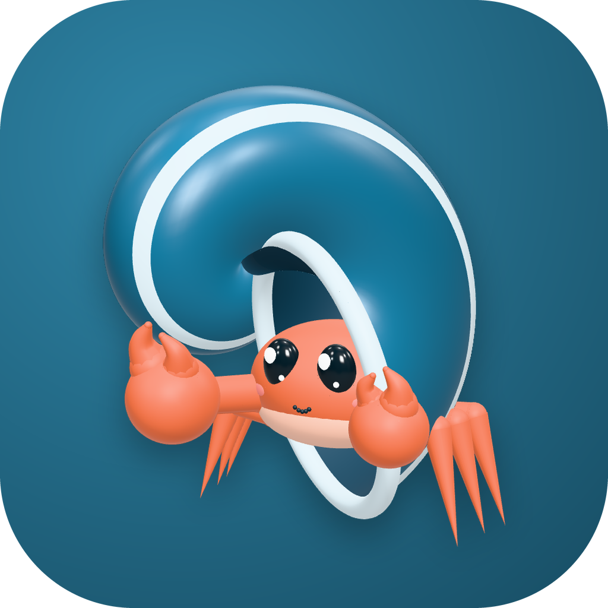
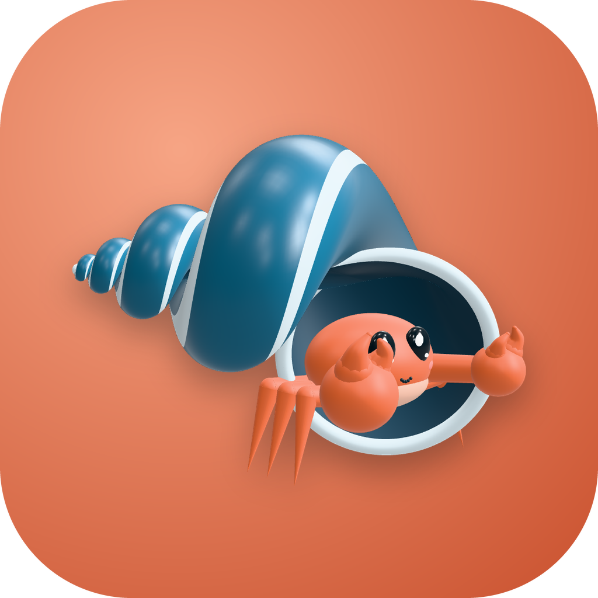
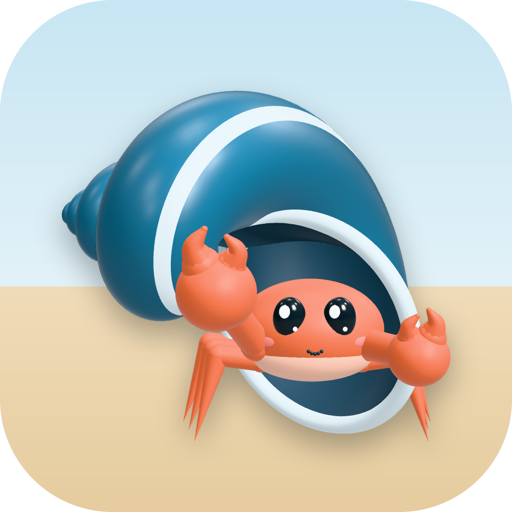
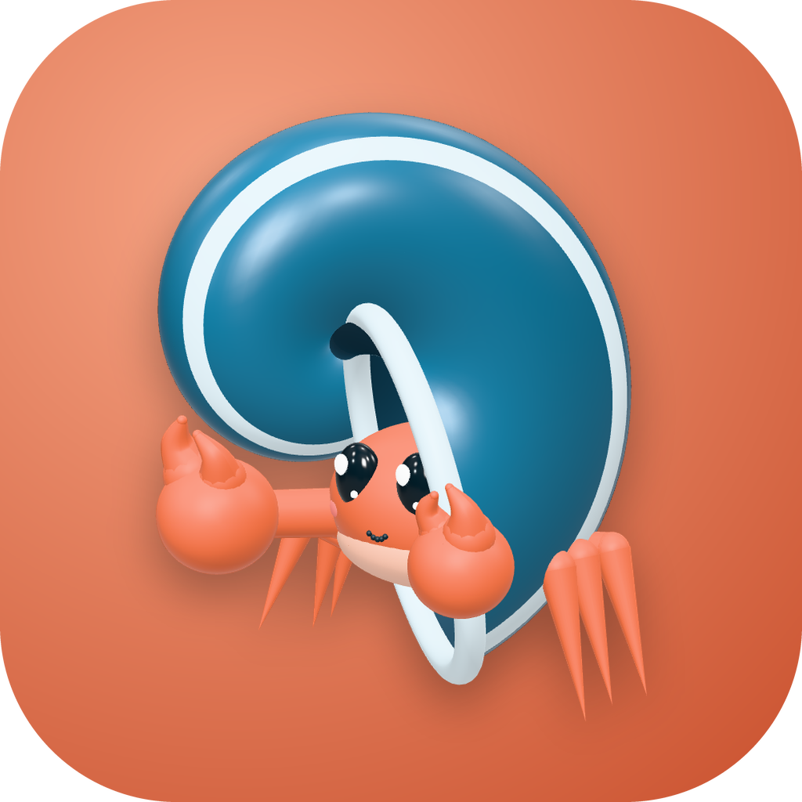
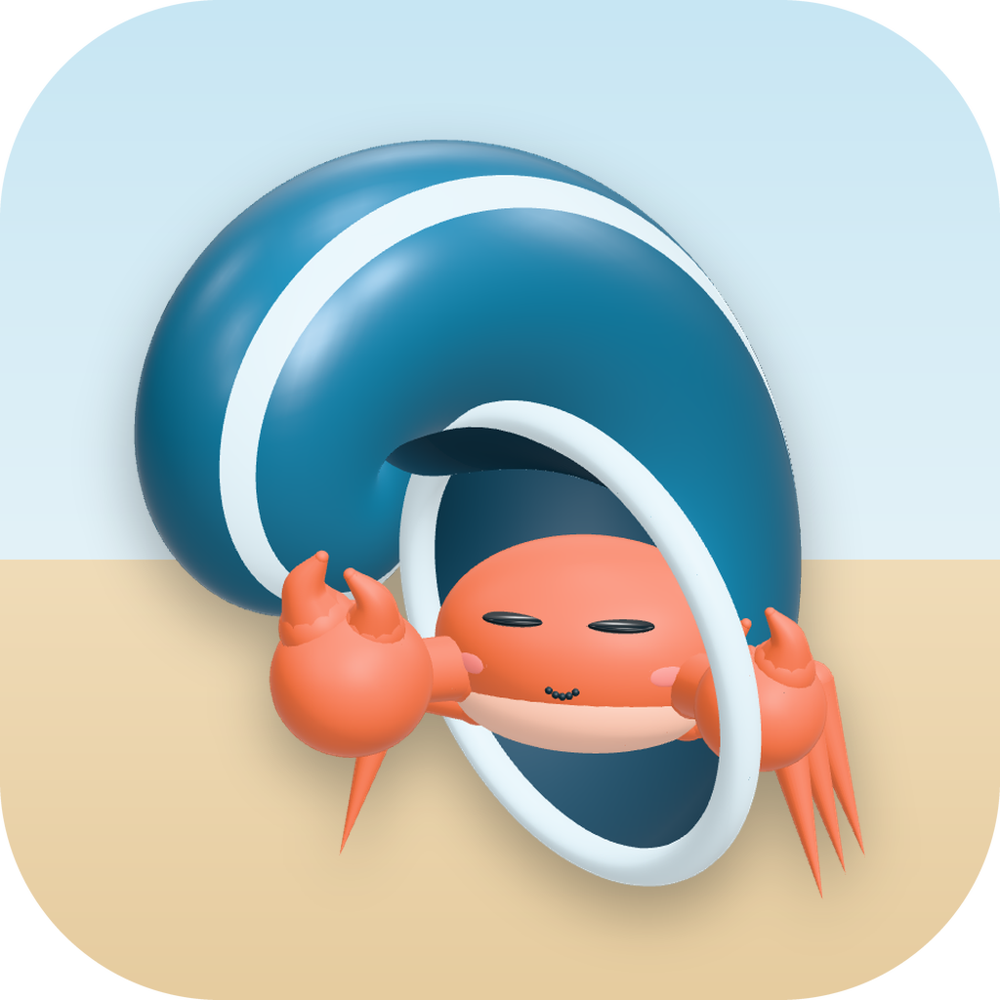

Casa nas costas: o caranguejo mora na abertura da concha
Poses
na concha, fundo creme
três quartos, fundo azul
do outro lado, fundo coral
acenando, fundo praiacomemorando, fundo escuroespiando lá de dentro, fundo cremepiscando, fundo azul
andando, fundo coral
dormindo, fundo praia